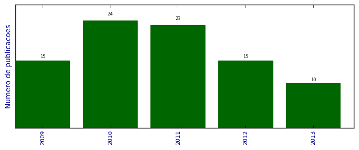

UFSM - Análise do Lattes
Artigos completos publicados em periódicos

Número total de itens: 87
(A1: 0, A2: 0, B1: 16, B2: 0, B3: 0, B4: 5, B5: 66, C: 0, Qualis não identificado: 0)
Legenda Qualis:
- Publicação para a qual o nome exato do Qualis foi identificado: Qualis <estrato>
- Publicação para a qual um nome similar (não exato) do Qualis foi identificado: Qualis <estrato> (nome similar)
- Publicação para a qual nenhum nome do Qualis foi identificado: Qualis não identificado (nome usado na busca)
2013
| 1. | ARALDI, PIETRO FURIAN ; Schlosser, José Fernando ; FRANTZ, ULISSES GIACOMINI ; RIBAS, RODRIGO LAMPERT ; SANTOS, PAULA MACHADO DOS. Eficiência operacional na colheita mecanizada em lavouras de arroz irrigado. Ciência Rural (UFSM. Impresso). v. 43, p. 445-451, 2013.  [ citações Google Scholar | citações Microsoft Acadêmico | busca Google ] Qualis: B1 |
| 2. | BANDEIRA, C. T. ; RUSSINI, A. ; SCHLOSSER, J. F. ; DORNELLES, M. E. C. ; FRANTZ, U. G. ; FRANTZ, U. G.. Sintomas relacionados a esforços repetitivos em operadores. Tecnologia Ciência Agropecuária. v. 7, p. 53-56, 2013. [ citações Google Scholar | citações Microsoft Acadêmico | busca Google ] Qualis: B5 (Tecnologia & Ciência Agropecuária) |
| 3. | EBERT, L. C. ; SCHLOSSER, J.F. ; Silva, Pablo Gustavo Ferrer ; Frantz, U.G. ; FARIAS, M. S.. Percepções e expectativas sobre a tecnologia Thermal Pest Control na vitivinicultura brasileira. Revista Brasileira de Viticultura e Enologia. v. 5, p. 34, 2013. [ citações Google Scholar | citações Microsoft Acadêmico | busca Google ] Qualis: B5 |
| 4. | SCHLOSSER, J.F.. JD 8335R. Cultivar Máquinas. v. XI, p. 22-27, 2013. [ citações Google Scholar | citações Microsoft Acadêmico | busca Google ] Qualis: B5 |
| 5. | SCHLOSSER, J.F.. Defensor SP2500. Cultivar Máquinas. v. XI, p. 18-24, 2013. [ citações Google Scholar | citações Microsoft Acadêmico | busca Google ] Qualis: B5 |
| 6. | SCHLOSSER, J.F. ; ESTRADA, J. S.. Arco protetor. Cultivar Máquinas. v. XI, p. 06-09, 2013. [ citações Google Scholar | citações Microsoft Acadêmico | busca Google ] Qualis: B5 |
| 7. | SCHLOSSER, J.F. ; FARIAS, M. S. ; RODRIGUES, F. A. ; Frantz, U. G.. Gigantes da pulverização. Cultivar Máquinas. v. XI, p. 38-41, 2013. [ citações Google Scholar | citações Microsoft Acadêmico | busca Google ] Qualis: B5 |
| 8. | SCHLOSSER, J.F. ; Frantz, U. G. ; FARIAS, M. S. ; BARBIERI, J. P. ; FERIGOLO, L. F.. Duelo de gigantes. Cultivar Máquinas. v. XI, p. 22-31, 2013. [ citações Google Scholar | citações Microsoft Acadêmico | busca Google ] Qualis: B5 |
| 9. | SCHLOSSER, J.F. ; Frantz, U. G. ; FARIAS, M. S. ; JAEHN, E.. LS U60. Cultivar Máquinas. v. XI, p. 20-25, 2013. [ citações Google Scholar | citações Microsoft Acadêmico | busca Google ] Qualis: B5 |
| 10. | SCHLOSSER, J.F. ; RODRIGUES, F. A. ; ESTRADA, J. S. ; BOLLER, Walter. MF 32 Sr. Cultivar Máquinas. v. XI, p. 20-25, 2013. [ citações Google Scholar | citações Microsoft Acadêmico | busca Google ] Qualis: B5 |
2012
| 1. | DORNELLES, M. E. C. ; SCHLOSSER, J. F. ; CASALI, A. ; NOLLER, D. S. ; FARIAS, M. S.. Conformidade de manômetros utilizados em pulverizadores agrícolas. Engenharia na Agricultura (Impresso). v. 20, p. 244-249, 2012. [ citações Google Scholar | citações Microsoft Acadêmico | busca Google ] Qualis: B4 |
| 2. | FARIAS, M. S. ; Frantz, U.G. ; Nietd, G. ; SCHLOSSER, J. F. ; UHRY, D. ; RODRIGUES, F. A.. Como otimizar a sua máquina. Cultivar Máquinas. v. 768, p. 40-44, 2012. [ citações Google Scholar | citações Microsoft Acadêmico | busca Google ] Qualis: B5 |
| 3. | FARIAS, M. S. ; Frantz, U.G. ; SCHLOSSER, J. F.. Conjunto calibrado. Cultivar Máquinas. v. 121, p. 28-34, 2012. [ citações Google Scholar | citações Microsoft Acadêmico | busca Google ] Qualis: B5 |
| 4. | FARIAS, M. S. ; SCHLOSSER, J. F. ; Frantz, U.G. ; FERIGOLO, L. F.. Você já pensou na água da calda?. Granja (Porto Alegre). v. 768, p. 58-60, 2012. [ citações Google Scholar | citações Microsoft Acadêmico | busca Google ] Qualis: B5 |
| 5. | FIORESE, D. A. ; DALLMEYER, A. U. ; ROMANO, L. N. ; SCHLOSSER, J. F. ; MACHADO, P. R. M.. Desempenho de um motor de trator agrícola em bancada dinamométrica com biodiesel de óleo de frango e misturas binárias com óleo diesel. Ciência Rural (UFSM. Impresso). v. 42, p. 660-666, 2012. [ citações Google Scholar | citações Microsoft Acadêmico | busca Google ] Qualis: B1 |
| 6. | Frantz, U.G. ; FARIAS, M. S. ; RODRIGUES, F. A. ; SCHLOSSER, J. F. ; UHRY, D.. Perda controlada. Cultivar Máquinas. v. 123, p. 17-19, 2012. [ citações Google Scholar | citações Microsoft Acadêmico | busca Google ] Qualis: B5 |
| 7. | NIETIEDT, G. H. ; RIBAS, R. L. ; SCHLOSSER, J. F. ; Frantz, U.G. ; CASALI, A. L. ; UHRY, D.. Distribuição dos comandos de operação em tratores agrícolas nacionais com até 55 kW de potência. Revista Brasileira de Engenharia Agrícola e Ambiental (Impresso). v. 16, p. 690-698, 2012. [ citações Google Scholar | citações Microsoft Acadêmico | busca Google ] Qualis: B1 |
| 8. | RUSSINI, Alexandre ; SCHLOSSER, J. F. ; Frantz. O amaciamento correto do motor do trator. Granja (Porto Alegre). v. 759, p. 40-41, 2012. [ citações Google Scholar | citações Microsoft Acadêmico | busca Google ] Qualis: B5 |
| 9. | SCHLOSSER, J. F.. Axial Flow 2566. Cultivar Máquinas. v. Xi, p. 23-27, 2012. [ citações Google Scholar | citações Microsoft Acadêmico | busca Google ] Qualis: B5 |
| 10. | SCHLOSSER, J. F. ; FARIAS, M. S. ; RODRIGUES, F. A.. MF 4290 Turbo. Cultivar Máquinas. v. X, p. 25-29, 2012. [ citações Google Scholar | citações Microsoft Acadêmico | busca Google ] Qualis: B5 |
| 11. | SCHLOSSER, J. F. ; FARIAS, M. S. ; RODRIGUES, F. A.. Test drive MF 8670 Dyna-VT e MF 512 L45. Cultivar Máquinas. v. 116, p. 20-27, 2012. [ citações Google Scholar | citações Microsoft Acadêmico | busca Google ] Qualis: B5 |
| 12. | SCHLOSSER, J. F. ; FRANTZ, U. G. ; RODRIGUES, F. A. ; BOLLER, W.. Test Drive MF 9690 ATR II. Cultivar Máquinas. v. 118, p. 20-25, 2012. [ citações Google Scholar | citações Microsoft Acadêmico | busca Google ] Qualis: B5 |
| 13. | SCHLOSSER, J.F.. Trator T8.295. Cultivar Máquinas. v. XI, p. 24-29, 2012. [ citações Google Scholar | citações Microsoft Acadêmico | busca Google ] Qualis: B5 |
| 14. | SCHLOSSER, J.F.. FIMA 2012. Cultivar Máquinas. v. XI, p. 10-13, 2012. [ citações Google Scholar | citações Microsoft Acadêmico | busca Google ] Qualis: B5 |
| 15. | SICHONANY, Oni Reasilvia de Almeida ; MEDINA, R. D. ; MEDINA, R. D. ; SCHLOSSER, J. F. ; Fernando Beux Dos Santos ; Jaziel S. Lobo ; ROGGIA, Ïria Brucker. Telemetria na transmissão de dados de desempenho de máquinas agrícolas utilizando tecnologia GSM/GPRS e ZigBee. Ciência Rural (UFSM. Impresso). v. 42, p. 1430-1433, 2012. [ citações Google Scholar | citações Microsoft Acadêmico | busca Google ] Qualis: B1 |
2011
| 1. | CASALI, A.L. ; FARIAS, M.S. ; SCHLOSSER, J.F. ; ROMANO, L.N. ; UHRY, D.. Conformidade do Posto de Operação de Pulverizadores Autopropelidos. Engenharia na Agricultura (Impresso). v. 19, p. 548-556, 2011. [ citações Google Scholar | citações Microsoft Acadêmico | busca Google ] Qualis: B4 |
| 2. | DORNELLES, Marçal Elizandro de Carvalho ; SCHLOSSER, J. F. ; BOLLER, Walter ; RUSSINI, Alexandre ; CASALI, A. L.. Inspeção técnica de tratores e pulverizadores utilizados em pulverização agrícola. Engenharia na Agricultura. v. 19, p. 36-43, 2011. [ citações Google Scholar | citações Microsoft Acadêmico | busca Google ] Qualis: B4 (Engenharia na Agricultura (Impresso)) |
| 3. | FARIAS, M. S. ; SCHLOSSER, J. F. ; Frantz, U. G. ; RIBAS, R. L.. Tempo e dinheiro. Cultivar Máquinas. v. 112, p. 06-09, 2011. [ citações Google Scholar | citações Microsoft Acadêmico | busca Google ] Qualis: B5 |
| 4. | FARIAS, M. S. ; SCHLOSSER, J. F. ; Frantz, U.G. ; NIETIEDT, G. H.. Como escolher. Cultivar Máquinas. v. 104, p. 36-37, 2011. [ citações Google Scholar | citações Microsoft Acadêmico | busca Google ] Qualis: B5 |
| 5. | Frantz, U.G. ; SCHLOSSER, J. F. ; NIETIEDT, G. H. ; RUSSINI, Alexandre. Os usos e vantagens do rodado duplo. Granja (Porto Alegre). v. 747, p. 36-38, 2011. [ citações Google Scholar | citações Microsoft Acadêmico | busca Google ] Qualis: B5 |
| 6. | NIETIEDT, G. H. ; SCHLOSSER, J. F. ; BOLLER, W.. Draper Hiflex. Cultivar Máquinas. v. 106, p. 26-30, 2011. [ citações Google Scholar | citações Microsoft Acadêmico | busca Google ] Qualis: B5 |
| 7. | NIETIEDT, G. H. ; SCHLOSSER, J. F. ; BOLLER, W. ; BOLLER, W.. Test Drive - Draper HiFlex. Cultivar Máquinas. v. 10, p. 26-30, 2011. [ citações Google Scholar | citações Microsoft Acadêmico | busca Google ] Qualis: B5 |
| 8. | NIETIEDT, G. H. ; SCHLOSSER, J. F. ; Frantz, U.G. ; FARIAS, M. S. ; UHRY, D.. O uso do Biodiesel sem medos. Granja (Porto Alegre). v. 748, p. 36-40, 2011. [ citações Google Scholar | citações Microsoft Acadêmico | busca Google ] Qualis: B5 |
| 9. | NIETIEDT, G. H. ; SCHLOSSER, J. F. ; RIBAS, R. L. ; Frantz, U.G.. Desempenho de um motor de injeção diretasob misturas de biodiesel metílico de soja. Ciência Rural (UFSM. Impresso). v. 41, p. 1177-1182, 2011. [ citações Google Scholar | citações Microsoft Acadêmico | busca Google ] Qualis: B1 |
| 10. | NIETIEDT, G. H. ; SCHLOSSER, J. F. ; RUSSINI, Alexandre ; Frantz, U.G. ; RIBAS, R. L.. PERFOMANCE EVALUATION OF A DIRECT INJECTION ENGINE USING DIFFERENT BLENDS OF SOYBEAN (Glycine max) METHYL BIODIESEL. Engenharia Agrícola (Impresso). v. 31, p. 916-922, 2011. [ citações Google Scholar | citações Microsoft Acadêmico | busca Google ] Qualis: B1 |
| 11. | RUSSINI, Alexandre ; SCHLOSSER, J. F. ; Frantz, U.G. ; NIETIEDT, G. H.. Os fundamentais zelos com a máquina. Granja (Porto Alegre). v. 746, p. 44-46, 2011. [ citações Google Scholar | citações Microsoft Acadêmico | busca Google ] Qualis: B5 |
| 12. | SANTOS, P. M. ; SCHLOSSER, J. F. ; RUSSINI, Alexandre ; CASALI, A. ; RIBAS, R. L. ; ROBERTI JUNIOR, O. L.. Validação de teorias de simulação para operações com escarificadores em solo argiloso no planalto do Estado do Rio Grande do Sul, Brasil. Ciência Rural (UFSM. Impresso). v. 41, p. 120-126, 2011. [ citações Google Scholar | citações Microsoft Acadêmico | busca Google ] Qualis: B1 |
| 13. | SCHLOSSER, J. F.. MF 9030. Cultivar Máquinas. v. 104, p. 22-27, 2011. [ citações Google Scholar | citações Microsoft Acadêmico | busca Google ] Qualis: B5 |
| 14. | SCHLOSSER, J. F.. JD 6110D. Cultivar Máquinas. v. 105, p. 18-23, 2011. [ citações Google Scholar | citações Microsoft Acadêmico | busca Google ] Qualis: B5 |
| 15. | SCHLOSSER, J. F. ; CASALI, A. L. ; RODRIGUES, F. A.. Test Drive John Deere 6125J. Cultivar Máquinas. v. 110, p. 22-27, 2011. [ citações Google Scholar | citações Microsoft Acadêmico | busca Google ] Qualis: B5 |
| 16. | SCHLOSSER, J. F. ; DALLMEYER, Arno Udo ; DEBIASI, Henrique ; MENEGAS, Mauro Tavares ; NIETIEDT, G. H.. Alteração do campo visual em função do uso de cabines em tratores agrícolas. Engenharia na Agricultura. v. 31, p. 359-366, 2011. [ citações Google Scholar | citações Microsoft Acadêmico | busca Google ] Qualis: B4 (Engenharia na Agricultura (Impresso)) |
| 17. | SCHLOSSER, J. F. ; FARIAS, M. S.. Test Drive Cotton Blue 2826. Cultivar Máquinas. v. 111, p. 18-23, 2011. [ citações Google Scholar | citações Microsoft Acadêmico | busca Google ] Qualis: B5 |
| 18. | SCHLOSSER, J. F. ; FARIAS, M. S. ; RODRIGUES, F. A.. Test Drive Imperador 3100. Cultivar Máquinas. v. 112, p. 16-21, 2011. [ citações Google Scholar | citações Microsoft Acadêmico | busca Google ] Qualis: B5 |
| 19. | SCHLOSSER, J. F. ; FRANTZ, U. G. ; RIBAS, R. L.. Teste Drive - 1155-4 super estreito. Cultivar Máquinas. v. 109, p. 16-21, 2011. [ citações Google Scholar | citações Microsoft Acadêmico | busca Google ] Qualis: B5 |
| 20. | SCHLOSSER, J. F. ; NIETIEDT, G. H. ; FERRER, P. S.. JD 5078E e JD 5085E. Cultivar Máquinas. v. 103, p. 24-29, 2011. [ citações Google Scholar | citações Microsoft Acadêmico | busca Google ] Qualis: B5 |
| 21. | SCHLOSSER, J. F. ; NIETIEDT, G. H. ; FERRER, P. S.. Teste duplo. Cultivar Máquinas. v. 104, p. 18-22, 2011. [ citações Google Scholar | citações Microsoft Acadêmico | busca Google ] Qualis: B5 |
| 22. | SCHLOSSER, J. F. ; UHRY, D. ; Uhry, Daniel ; FARIAS, M. S.. Test Drive MF 4275 Compact. Cultivar Máquinas. v. 107, p. 22-26, 2011. [ citações Google Scholar | citações Microsoft Acadêmico | busca Google ] Qualis: B5 |
| 23. | SICHONANY, O. R. A. ; SCHLOSSER, J. F. ; MEDINA, R. D. ; ROGGIA, I. B. ; Santos, F.B dos. Sistema computacional de gerenciamento para acompanhamento de desempenho de máquinas agrícolas instrumentadas com sensores. Ciência Rural (UFSM. Impresso). v. 41, p. 356-361, 2011. [ citações Google Scholar | citações Microsoft Acadêmico | busca Google ] Qualis: B1 |
2010
| 1. | FIORESE, D. A. ; MARTINS, T. G. L. ; BENDER, A. R. K. ; DALLMEYER, A. ; SCHLOSSER, J. F. ; MACHADO, P. R. M. ; ROMANO, L. N.. Testing of agricultural tractors: Dynamic methods for evaluation of performance and specifics fuel cost. SAE Technical Paper Series. v. 36, p. 2010-36-0400P, 2010. [ citações Google Scholar | citações Microsoft Acadêmico | busca Google ] Qualis: B5 |
| 2. | Frantz, U.G. ; SCHLOSSER, J. F. ; NIETIEDT, G. H.. AP sem custos. Cultivar Máquinas. v. 93, p. 7-9, 2010. [ citações Google Scholar | citações Microsoft Acadêmico | busca Google ] Qualis: B5 |
| 3. | Frantz, U.G. ; SCHLOSSER, J. F. ; NIETIEDT, G. H. ; RIBAS, R. L.. Nem pouco e nem em excesso. Granja (Porto Alegre). v. 21, p. 10-12, 2010. [ citações Google Scholar | citações Microsoft Acadêmico | busca Google ] Qualis: B5 |
| 4. | HAUSEN, R. B. ; ROMANO, L. N. ; SCHLOSSER, J. F. ; MARTINS, M. E. S. ; TRINDADE JUNIOR, A. L.. Efficient Ethanol Engines in Agricultural Aviation. SAE Technical Paper Series. v. ., p. 2010-36-0034P, 2010. [ citações Google Scholar | citações Microsoft Acadêmico | busca Google ] Qualis: B5 |
| 5. | MATTAR, D. M. P. ; DALLMEYER, A. U. ; SCHLOSSER, J. F. ; MARCAL,. CONFORMIDADE DE ACESSOS E SAÍDAS DE POSTOS DE OPERAÇÃO EM TRATORES AGRÍCOLAS. Engenharia Agrícola (Impresso). v. 30, p. 74-81, 2010. [ citações Google Scholar | citações Microsoft Acadêmico | busca Google ] Qualis: B1 |
| 6. | NIETIEDT, G. H. ; Frantz, U.G. ; FARIAS, M. S. ; RIBAS, R. L. ; SCHLOSSER, J. F.. Ventos europeus. Cultivar Máquinas. v. 99, p. 6-9, 2010. [ citações Google Scholar | citações Microsoft Acadêmico | busca Google ] Qualis: B5 |
| 7. | NIETIEDT, G. H. ; Frantz, U.G. ; SCHLOSSER, J. F. ; RIBAS, R. L.. Efeito colateral. Cultivar Máquinas. v. 97, p. 6-9, 2010. [ citações Google Scholar | citações Microsoft Acadêmico | busca Google ] Qualis: B5 |
| 8. | NIETIEDT, G. H. ; Frantz, U.G. ; SCHLOSSER, J. F. ; RIBAS, R. L.. Para colher bem. Cultivar Máquinas. v. 102, p. 18-25, 2010. [ citações Google Scholar | citações Microsoft Acadêmico | busca Google ] Qualis: B5 |
| 9. | RIBAS, R. L. ; NIETIEDT, G. H. ; Frantz, U.G. ; SCHLOSSER, J. F.. Medindo Forças. Cultivar Máquinas. v. IX, p. 26-29, 2010. [ citações Google Scholar | citações Microsoft Acadêmico | busca Google ] Qualis: B5 |
| 10. | RIBAS, R. L. ; NIETIEDT, G. H. ; SCHLOSSER, J. F. ; Frantz, U.G. ; FARIAS, M. S.. Transmitindo forças. Cultivar Máquinas. v. 98, p. 22-25, 2010. [ citações Google Scholar | citações Microsoft Acadêmico | busca Google ] Qualis: B5 |
| 11. | RIBAS, R. L. ; SCHLOSSER, J. F. ; Frantz, U.G. ; FARIAS, M. S. ; NIETIEDT, G. H.. Transmissões presentes em tratores agrícolas no Brasil. Ciência Rural (UFSM. Impresso). v. 40, p. 2206-2209, 2010. [ citações Google Scholar | citações Microsoft Acadêmico | busca Google ] Qualis: B1 |
| 12. | ROZIN, D. ; SCHLOSSER, J. F. ; WERNER, V. ; PERIN, Gismael Francisco ; SANTOS, P.. Conformidade dos comandos de operação de tratores agrícolas nacionais com a norma NBR ISO 4253. Revista Brasileira de Engenharia Agrícola e Ambiental (Online). v. 14, p. 1014/9-1019, 2010. [ citações Google Scholar | citações Microsoft Acadêmico | busca Google ] Qualis: B1 |
| 13. | SANTOS, P. M. ; SCHLOSSER, J. F. ; RUSSINI, Alexandre ; CASALI, A. L. ; RIBAS, R. L. ; ROBERTI JUNIOR, O. L.. Validação de teorias de predição para escarificadores em solos do Rio Grande do Sul. Ciência Rural (UFSM. Impresso). v. 41, p. 1-1, 2010. [ citações Google Scholar | citações Microsoft Acadêmico | busca Google ] Qualis: B1 |
| 14. | SCHLOSSER, J. F. ; BOLLER, Walter ; NIETIEDT, G. H.. Teste drive - BC 6500. Cultivar Máquinas. v. 94, p. 18-23, 2010. [ citações Google Scholar | citações Microsoft Acadêmico | busca Google ] Qualis: B5 |
| 15. | SCHLOSSER, J. F. ; DORNELLES, M.E. de C. ; BOLLER, W. ; CASALI, André ; RUSSINI, Alexandre. INSPEÇÃO DE MANÔMETROS EM PULVERIZADORES AGRÍCOLAS. Engenharia na Agricultura. v. XX, p. XX, 2010. [ citações Google Scholar | citações Microsoft Acadêmico | busca Google ] Qualis: B4 (Engenharia na Agricultura (Impresso)) |
| 16. | SCHLOSSER, J. F. ; DORNELLES, Marçal Elizandro de Carvalho ; DORNELLES, Eder Pinheiro ; DURIGON, Reges ; RUSSINI, Alexandre. Uniformidade de picado processado por colhedora de forragem. Engenharia Agrícola (Impresso). v. 30, p. 299-306, 2010. [ citações Google Scholar | citações Microsoft Acadêmico | busca Google ] Qualis: B1 |
| 17. | SCHLOSSER, J. F. ; FARIAS, M. S.. Yanmar 1155-4. Cultivar Máquinas. v. IX, p. 18-22, 2010. [ citações Google Scholar | citações Microsoft Acadêmico | busca Google ] Qualis: B5 |
| 18. | SCHLOSSER, J. F. ; FARIAS, M. S.. Test Drive Yanmar 1155-4. Cultivar Máquinas. v. 96, p. 18-22, 2010. [ citações Google Scholar | citações Microsoft Acadêmico | busca Google ] Qualis: B5 |
| 19. | SCHLOSSER, J. F. ; FRANTZ, U. G.. Test Drive - Nova Série. Cultivar Máquinas. v. 95, p. 26-30, 2010. [ citações Google Scholar | citações Microsoft Acadêmico | busca Google ] Qualis: B5 |
| 20. | SCHLOSSER, J. F. ; Frantz, U.G. ; RIBAS, R. L.. Teste drive Agrale 5075.4. Cultivar Máquinas. v. 100, p. 22-27, 2010. [ citações Google Scholar | citações Microsoft Acadêmico | busca Google ] Qualis: B5 |
| 21. | SCHLOSSER, J. F. ; NIETIEDT, G. H. ; BOLLER, Walter. Test drive - CR 9060. Cultivar Máquinas. v. 99, p. 22-27, 2010. [ citações Google Scholar | citações Microsoft Acadêmico | busca Google ] Qualis: B5 |
| 22. | SCHLOSSER, J. F. ; NIETIEDT, G. H. ; FERRER, P. S.. Teste JD 5078 e JD 5085. Cultivar Máquinas. v. 103, p. 24-29, 2010. [ citações Google Scholar | citações Microsoft Acadêmico | busca Google ] Qualis: B5 |
| 23. | SCHLOSSER, J. F. ; RUSSINI, Alexandre ; CASALI, A. L.. John Deere 5075E. Cultivar Máquinas. v. 101, p. 18-22, 2010. [ citações Google Scholar | citações Microsoft Acadêmico | busca Google ] Qualis: B5 |
| 24. | SCHLOSSER, J. F. ; RUSSINI, Alexandre ; Frantz, U.G. ; NIETIEDT, G. H.. Esforço prejudicial. Cultivar Máquinas. v. 95, p. 32-35, 2010. [ citações Google Scholar | citações Microsoft Acadêmico | busca Google ] Qualis: B5 |
2009
| 1. | DORNELLES, M.E. de C. ; SCHLOSSER, J. F. ; WITTER, M. H. ; DURIGON, Reges. Inspeção de pulverizadores no RS. Cultivar Máquinas. v. 82, p. 6-9, 2009. [ citações Google Scholar | citações Microsoft Acadêmico | busca Google ] Qualis: B5 |
| 2. | DORNELLES, Marçal Elizandro de Carvalho ; SCHLOSSER, J. F. ; CASALI, A. ; Brondani, L.. Inspeção técnica de pulverizadores agrícolas: histórico e importância. Ciência Rural (UFSM. Impresso). v. 39, p. 1601-1606, 2009. [ citações Google Scholar | citações Microsoft Acadêmico | busca Google ] Qualis: B1 |
| 3. | DORNELLES, Marçal Elizandro de Carvalho ; SCHLOSSER, J. F. ; RUSSINI, Alexandre ; PINHEIRO, Eder Dornelles ; DURIGON, Reges ; WITTER, M.. E a segurança?. Cultivar Máquinas. v. IX, p. 6-9, 2009. [ citações Google Scholar | citações Microsoft Acadêmico | busca Google ] Qualis: B5 |
| 4. | DURIGON, Reges ; PINHEIRO, Eder Dornelles ; DORNELLES, M.E. de C. ; SCHLOSSER, J. F. ; RUSSINI, Alexandre. Manejo localizado. Cultivar Máquinas. v. X, p. X, 2009. [ citações Google Scholar | citações Microsoft Acadêmico | busca Google ] Qualis: B5 |
| 5. | DURIGON, Reges ; SCHLOSSER, J. F. ; DORNELLES, Marçal Elizandro de Carvalho ; RUSSINI, Alexandre ; PINHEIRO, Eder Dornelles. Componentes principais em arroz irrigado utilizando manejo localizado. Geomática (Santa Maria. Online). v. 4, p. 1-11, 2009. [ citações Google Scholar | citações Microsoft Acadêmico | busca Google ] Qualis: B5 |
| 6. | DURIGON, Reges ; SCHLOSSER, J. F. ; RUSSINI, Alexandre ; DORNELLES, Marçal Elizandro de Carvalho ; PINHEIRO, Eder Dronelles. Correlações entre atributos químicos do solo e atributos da cultura e produtividade de arroz irrigado determinadas com técnicas de manejo localizado. Ciência Rural (UFSM. Impresso). v. 39, p. 2629-2633, 2009. [ citações Google Scholar | citações Microsoft Acadêmico | busca Google ] Qualis: B1 |
| 7. | MATTAR, D. M. P. ; SCHLOSSER, J. F. ; DALLMEYER, Arno Udo ; DORNELLES, Marçal Elizandro de Carvalho. Conformidade de acessos e saídas de postos de operação em tratores agrícolas segundo a Norma NBR/ISO 4252. Engenharia Agrícola (Impresso). v. 29, p. 32-41, 2009. [ citações Google Scholar | citações Microsoft Acadêmico | busca Google ] Qualis: B1 |
| 8. | SCHLOSSER, J. F.. Test drive - Valtra A750. Cultivar Máquinas. v. IX, p. 18-22, 2009. [ citações Google Scholar | citações Microsoft Acadêmico | busca Google ] Qualis: B5 |
| 9. | SCHLOSSER, J. F. ; BOLLER, Walter. Test drive - TC 5090. Cultivar Máquinas. v. IX, p. 20-25, 2009. [ citações Google Scholar | citações Microsoft Acadêmico | busca Google ] Qualis: B5 |
| 10. | SCHLOSSER, J. F. ; Nietd, G. ; CASALI, A.. Test drive - Farmal 95. Cultivar Máquinas. v. IX, p. 20-24, 2009. [ citações Google Scholar | citações Microsoft Acadêmico | busca Google ] Qualis: B5 |
| 11. | SCHLOSSER, J. F. ; NIETIEDT, G. H. ; CASALI, A. L. ; Carbonari, R.. Os grandões do MDA. Cultivar Máquinas. v. 86, p. 18-23, 2009. [ citações Google Scholar | citações Microsoft Acadêmico | busca Google ] Qualis: B5 |
| 12. | SCHLOSSER, J. F. ; NIETIEDT, G. H. ; CASALI, A. L. ; Carbonari, R.. Duelo de 75 cv. Cultivar Máquinas. v. 86, p. 18-23, 2009. [ citações Google Scholar | citações Microsoft Acadêmico | busca Google ] Qualis: B5 |
| 13. | SCHLOSSER, J. F. ; PERIN, Gismael Francisco. Caminho certo. Cultivar Máquinas. v. IX, p. 20-23, 2009. [ citações Google Scholar | citações Microsoft Acadêmico | busca Google ] Qualis: B5 |
| 14. | SCHLOSSER, J. F. ; PERIN, Gismael Francisco ; Frantz, U.G.. Teste drive -MF 7180. Cultivar Máquinas. v. IX, p. 24-28, 2009. [ citações Google Scholar | citações Microsoft Acadêmico | busca Google ] Qualis: B5 |
| 15. | SCHLOSSER, J. F. ; RUSSINI, Alexandre ; SANTOS, P. M.. Test Drive - MF 7390 Dyna - 6. Cultivar Máquinas. v. 92, p. 22-26, 2009. [ citações Google Scholar | citações Microsoft Acadêmico | busca Google ] Qualis: B5 |
(*) Relatório criado com produções desde 2009 até HOJE
Data de processamento: 11/04/2014 18:18:16